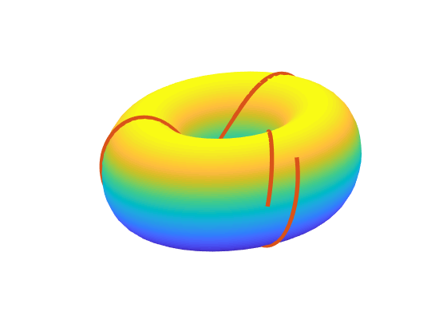

Suppose we have a torus $\mathcal{T}$ paramaterized by
$$
F(\theta,\phi) = \begin{bmatrix}
\cos\theta(R+r\cos\phi) \\
\sin\theta(R+r\cos\phi) \\
r\sin\phi
\end{bmatrix} \quad \theta, \phi \in [0, 2\pi],
$$
Surface $\mathcal{T}$ when $r=1$ and $R=2$.
where $R$ is the distance from the $x$ axis to the circle and $r$ is the radius of the circle that is rotated around the $z$ axis. We want to find the geodesics of this surface. First we should talk about what geodesics even are.
Definition. Let $\mathcal{S}$ be a surface and $p$ and $q$ be points lying on this surface. Then a geodesic is the curve $\gamma(t)$ representing the shortest path from $p$ to $q$.
Definition. A curve $\gamma(t)$ on a surface $\mathcal{S}$ is a geodesic if $\gamma(t)'' = 0$ or $\gamma(t)''$ is parallel to the unit normal n of $\mathcal{S}$ ($\gamma(t)'' \times$ n $= 0$).
Let $\gamma(t)$ be a geodesic on $\mathcal{T}$. Then we can parameterize $F$ to be
$$
\gamma(t) =F(\theta(t),\phi(t)) = \begin{bmatrix}
\cos(\theta(t))(R+r\cos(\phi(t))) \\
\sin(\theta(t))(R+r\cos(\phi(t))) \\
r\sin(\phi(t)) \\
\end{bmatrix}
$$
Notice that because $\gamma(t)''$ is a geodesic and $\gamma(t)'' \neq 0$, $\gamma(t)''$ must be parallel to the normal n of $\mathcal{T}$. Because $\gamma(t)''$ is parallel to n, and n = $F_\phi \times F_\theta$, $\gamma(t)''$ must be orthogonal to both $F_\phi$ and $F_\theta$. Therefore
$$\gamma(t)'' \cdot F_\phi=\gamma(t)'' \cdot F_\theta=0.$$
We can apply the chain rule to get
$$
\begin{gather}
\gamma(t)' = F_\phi\phi'+F_\theta\theta' \\
\gamma(t)''=F_{\phi\phi}(\phi')^2+F_{\phi\theta}\theta'\phi'+F_\phi\phi''+F_{\theta\theta}(\theta')^2+F_{\theta\phi}\phi'\theta'+F_\theta\theta''.
\end{gather}
$$
Because of the symmetry of second derivatives, this further simplifies to
$$\gamma(t)''=F_{\phi\phi}(\phi')^2+2F_{\phi\theta}\theta'\phi'+F_\phi\phi''+F_{\theta\theta}(\theta')^2+F_\theta\theta''.$$
Therefore we have to find the solutions to
$$
\begin{align}
\gamma(t)'' \cdot F_\phi &= \left(F_{\phi\phi}(\phi')^2+2F_{\phi\theta}\theta'\phi'+F_\phi\phi''+F_{\theta\theta}(\theta')^2+F_\theta\theta''\right) \cdot F_\phi = 0 \\
\gamma(t)'' \cdot F_\theta &= \left(F_{\phi\phi}(\phi')^2+2F_{\phi\theta}\theta'\phi'+F_\phi\phi''+F_{\theta\theta}(\theta')^2+F_\theta\theta''\right) \cdot F_\theta = 0
\end{align}
$$
which is not obviously simple. The algebra needed to arrive at a useful simplification may seem utterly annoying, but there are substitutions that can be made that make some of the algebra easier. If you want to read more about these substitutions, you should check out Chapter 8 on geodesics in Elementary Differential Geometry1 by Pressley. I'm going to assume that we've done all the necessary algebra and sweep all those calculations under the rug so we can move on.
The solutions to the above system are given by another system:
$$
\begin{gather}
\theta''=\frac{2r\sin(\phi)}{R+r\cos(\phi)}\phi'\theta' \\
\phi'' = -\frac{1}{r}\sin(\phi)(R+r\cos(\phi))(\theta')^2.
\end{gather}
$$
Trying to solve this sytem by hand is difficult because not only are they nonlinear, they are coupled. This is a job for a numerical solver.
We can transform this system of two second order equations into a system of four first order equations so that
$$
\begin{gather*}
z_1=\theta \\
z_2=\theta' \\
z_3=\phi \\
z_4=\phi'
\end{gather*}
$$
and
$$
\begin{align*}
z_1' &= z_2 \\
z_2' &= \frac{2r\sin(z_3)}{R+r\cos(z_3)}z_2z_4 \\
z_3' &= z_4 \\
z_4' &= -\frac{1}{r}\sin(z_3)(R+r\cos(z_3))z_2^2
\end{align*}
$$
Using MATLAB's ode45, we can generate geodesics by providing the initial conditions for $\theta, \theta', \phi,$ and $\theta'$.
Geodesic generated by initial condition $[0, 0, 0, 1]$.
Geodesic generated by initial condition $[0, 1, 0, 0]$.
In the above images, an initial condition of $[a, b, c, d]$ means a point at position $(a,c)$ with velocity vector $(b,d)$. Here's another cool one generated by $[0, 1, 0, 12]$:

Keep in mind that because we are using a numerical solver, we have to specify the span that we want $t$ to run. In the first two images, it didn't matter so much what span we picked, as long as it was longer than $2\pi$. This is because we were only using a velocity vector with one nonzero component. Whereas in the geodesic immediately above we have chose a velocity vector that will cause $\gamma$ to rotate along both axes.